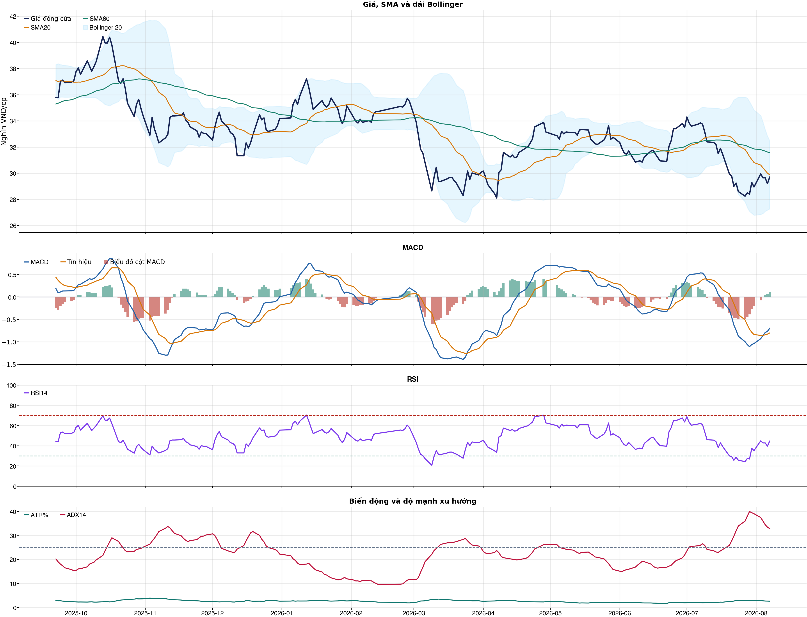
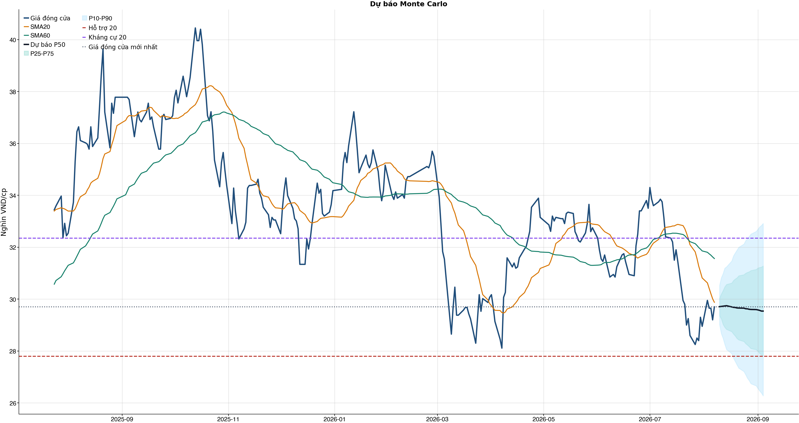
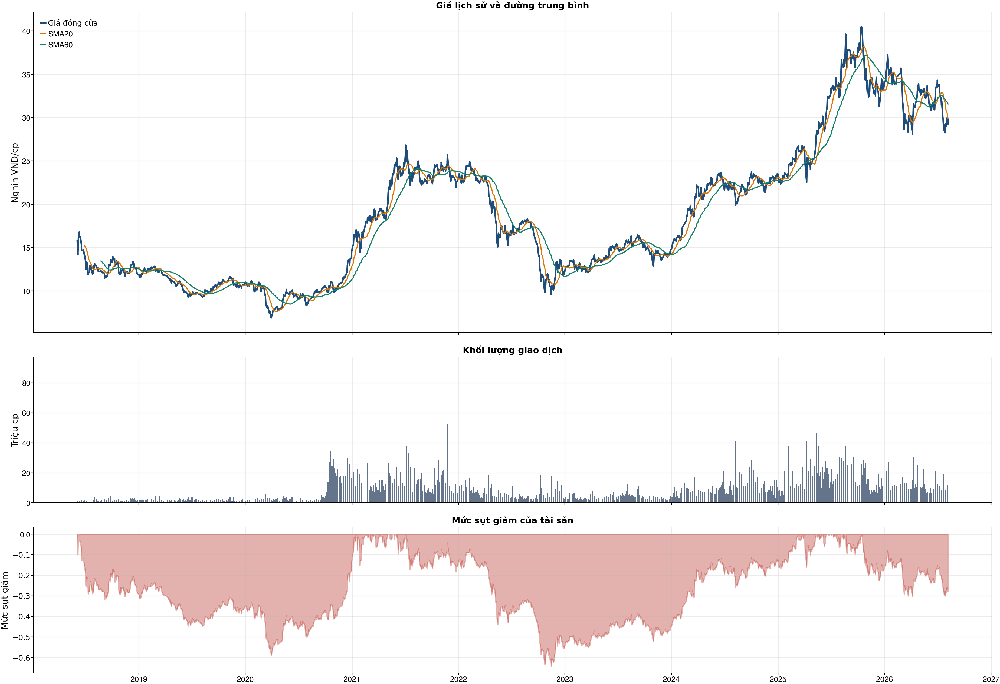

Kết quả chính
Tổng quan cơ bản
Biểu đồ kỹ thuật

Tín hiệu kỹ thuật
| Xu hướng | Cẩn thận | Giá nằm dưới SMA60. |
| MACD | Tích cực | MACD trên signal, histogram dương. |
| RSI14 | Yếu | RSI 44.6. |
| Bollinger | Ổn định | Giá nằm trong dải Bollinger. |
| ADX | Xu hướng giảm | ADX 32.8, -DI vượt +DI. |
| Thanh khoản | Đột biến | 1.74 lần trung bình. |
| Stochastic | Hồi phục | %K nằm trên %D. |
So sánh mô hình
| XGBoost | 0.486 | AUC 0.498 |
| Logistic | 0.495 | AUC 0.502 |
| Đa số | 0.500 | Mốc so sánh |
Kiểm thử chiến lược ngoài mẫu sau chi phí
| Lợi nhuận ròng | -27.1% | 726 quan sát ngoài mẫu |
| Sharpe | -1.65 | Sau chi phí |
| Mức sụt giảm tối đa | -27.7% | 42 vòng giao dịch |
| Chi phí giả định | 50.0 bps | Một vòng mua và bán |
Mức độ quan trọng của đặc trưng
| volatility_20d | 14.39 | Mức đóng góp |
| bb_position_20 | 10.61 | Mức đóng góp |
| return_5d | 10.13 | Mức đóng góp |
| close_vs_sma60 | 9.97 | Mức đóng góp |
| relative_strength_20d | 9.91 | Mức đóng góp |
| return_2d | 9.76 | Mức đóng góp |
| macd_pct | 9.46 | Mức đóng góp |
| excess_return_5d | 8.81 | Mức đóng góp |
Điều kiện phát hành tín hiệu
| AUC của mô hình | KHÔNG ĐẠT | Điều kiện phát hành tín hiệu |
| Độ chính xác cân bằng của mô hình | KHÔNG ĐẠT | Điều kiện phát hành tín hiệu |
| XGBoost vượt mô hình Logistic đối chứng | KHÔNG ĐẠT | Điều kiện phát hành tín hiệu |
| Xác suất tăng đạt ngưỡng | KHÔNG ĐẠT | Điều kiện phát hành tín hiệu |
| Bối cảnh kỹ thuật đạt ngưỡng | KHÔNG ĐẠT | Điều kiện phát hành tín hiệu |
| Tỷ lệ lợi nhuận/rủi ro đạt ngưỡng | ĐẠT | Điều kiện phát hành tín hiệu |
| Dữ liệu còn mới | ĐẠT | Điều kiện phát hành tín hiệu |
| Có khối lượng vị thế hợp lệ | ĐẠT | Điều kiện phát hành tín hiệu |
| Có kết quả kiểm thử chiến lược ngoài mẫu | ĐẠT | Điều kiện phát hành tín hiệu |
| Mẫu kiểm thử chiến lược đủ lớn | ĐẠT | Điều kiện phát hành tín hiệu |
| Kiểm thử chiến lược có lợi thế ròng | KHÔNG ĐẠT | Điều kiện phát hành tín hiệu |
Quản trị rủi ro
| Rủi ro/lệnh | 1.0% | 1,000,000 VND |
| Mức dừng lỗ | 28.52 | Rủi ro mỗi cổ phiếu 1.33 |
| Mục tiêu 1 | 32.35 | Lợi nhuận/rủi ro 1.88 |
| Mục tiêu 2 | 32.91 | Dự báo/kháng cự |
Phân tích cơ bản
| P/E | 7.76 | 2026-Q2 |
| P/B | 1.17 | 2026-Q2 |
| P/S | 3.65 | 2026-Q2 |
| ROE | 14.8% | 2026-Q2 |
| ROA | 2.3% | 2026-Q2 |
| Gross margin | 69.1% | 2026-Q2 |
| Net margin | 47.0% | 2026-Q2 |
| Debt/Equity | 5.74 | 2026-Q2 |
| Current ratio | 0.00 | 2026-Q2 |
| NPL | 1.1% | 2026-Q2 |
| CASA | 35.0% | 2026-Q2 |
| Dividend yield | 0.0% | 2026-Q2 |
| Market cap | 210,461.3 tỷ | 2026-Q2 |
| Revenue Growth | 17.3% | 2026-Q2 YoY |
| Profit Growth | 17.7% | 2026-Q2 YoY |
| CAPEX | -132.6 tỷ | 2026-Q2 |
| Lợi nhuận sau thuế | 7,726.6 tỷ | 2026-Q2 |
| Tổng tài sản | 1,273,076.9 tỷ | 2026-Q2 |
| Vốn chủ sở hữu | 188,997.1 tỷ | 2026-Q2 |
Tin tức doanh nghiệp
| Trạng thái | Có dữ liệu | research_only |
| Nguồn / số bài | VCI | 50 |
| Bài đủ timestamp | 50 | Chỉ các bài này mới được phép dùng point-in-time |
| Sentiment 5 ngày | 0.00 | 2.0 bài trước cutoff |
| Phương pháp | keyword_heuristic_v1 | Research only; chưa dùng làm tín hiệu mua/bán |
Dự báo ngắn hạn
| 2026-08-10 | 29.71 | P10 29.02 / P90 30.53 |
| 2026-08-11 | 29.72 | P10 28.67 / P90 30.82 |
| 2026-08-12 | 29.73 | P10 28.49 / P90 30.98 |
| 2026-08-13 | 29.74 | P10 28.26 / P90 31.19 |
| 2026-08-14 | 29.74 | P10 28.06 / P90 31.24 |
| 2026-08-17 | 29.70 | P10 27.90 / P90 31.47 |
| 2026-08-18 | 29.68 | P10 27.72 / P90 31.67 |
| 2026-08-19 | 29.68 | P10 27.60 / P90 31.78 |
Biểu đồ dự báo

Lịch sử giá và mức sụt giảm

Báo cáo dùng để học tập và lập kịch bản, không phải khuyến nghị mua/bán.
Phân tích AI có kiểm chứng
Trạng thái quyết định: NO_EDGE
Tóm tắt: ML decision hiện giữ nguyên NO_EDGE. News Reader đã trích đoạn có nguồn của 9 bài để phân loại chủ đề (ket_qua_kinh_doanh: 9, co_tuc_va_hanh_dong_doanh_nghiep: 7, vi_mo: 6, nganh: 8, rui_ro: 6), nhưng các trích đoạn này không tạo bằng chứng mới cho quyết định đầu tư.
Kỹ thuật: Artifact kỹ thuật: bias Trung tính; điểm 0. Chi tiết artifact: Xu hướng: Cẩn thận (Giá nằm dưới SMA60.); MACD: Tích cực (MACD trên signal, histogram dương.); RSI14: Yếu (RSI 44.6.); Bollinger: Ổn định (Giá nằm trong dải Bollinger.); ADX: Xu hướng giảm (ADX 32.8, -DI vượt +DI.); Thanh khoản: Đột biến (1.74 lần trung bình.); Stochastic: Hồi phục (%K nằm trên %D.)
Cơ bản: Artifact cơ bản: Techcombank; kỳ 2026-Q2; P/E 7.76; P/B 1.17; ROE 14.8%; ROA 2.3%; Debt/Equity 5.74; Revenue Growth 17.3%; Profit Growth 17.7%.
Tin tức: Đã đọc trích đoạn giới hạn của 9 bài; phân nhóm rule-based: ket_qua_kinh_doanh: 9, co_tuc_va_hanh_dong_doanh_nghiep: 7, vi_mo: 6, nganh: 8, rui_ro: 6. Tác động cần kiểm chứng: Đối chiếu doanh thu/lợi nhuận trong bài với BCTC và kỳ vọng thị trường. Kiểm tra ngày GDKHQ, tỷ lệ, nguồn chi trả và nguy cơ pha loãng trước khi đánh giá tác động. Đối chiếu thời điểm công bố và kênh tác động lãi suất/tỷ giá với mô hình kinh doanh. So sánh tín hiệu ngành với thị phần, nhu cầu và đối thủ trước khi suy luận cho riêng doanh nghiệp. Xác minh công bố chính thức, phạm vi ảnh hưởng và khả năng định lượng rủi ro. Đây không phải sentiment hay dự báo tác động giá.
Live research: Live snapshot lấy lúc 2026-08-09T09:12:21.451594+00:00; News Reader đọc được 9 bài. ML có 6 lý do guard và vẫn là NO_EDGE. Không dùng tin live để train/backtest.
Rủi ro cần kiểm chứng
- ML guard: AUC 0.498 < 0.540
- ML guard: Balanced accuracy 0.486 < 0.520
- ML guard: XGBoost chưa vượt logistic baseline: AUC XGBoost=0.4975284097502108, AUC logistic=0.5018604615182294
- ML guard: Probability 50.9% < 55.0%
- ML guard: Technical score 0 < 2
- ML guard: Lợi thế OOS ròng không đạt: return=-0.2705657999999995, Sharpe=-1.6492225771903177
- News Reader: Đối chiếu doanh thu/lợi nhuận trong bài với BCTC và kỳ vọng thị trường.
- News Reader: Kiểm tra ngày GDKHQ, tỷ lệ, nguồn chi trả và nguy cơ pha loãng trước khi đánh giá tác động.
- News Reader: Đối chiếu thời điểm công bố và kênh tác động lãi suất/tỷ giá với mô hình kinh doanh.
- News Reader: So sánh tín hiệu ngành với thị phần, nhu cầu và đối thủ trước khi suy luận cho riêng doanh nghiệp.
- News Reader: Xác minh công bố chính thức, phạm vi ảnh hưởng và khả năng định lượng rủi ro.
- Chỉ lưu trích đoạn giới hạn để kiểm chứng nguồn; không lưu hay hiển thị toàn văn bài báo.
- Phân nhóm là keyword rule-based để định tuyến research, không phải sentiment hay dự báo tác động giá.
- Dữ liệu News Reader chỉ phục vụ research/report; không dùng làm feature train/backtest khi chưa có lịch sử available_at point-in-time.
- Tin live/trích đoạn cần mở URL gốc để kiểm chứng bối cảnh, số liệu và thời điểm trước khi sử dụng.
Bằng chứng
- ML decision artifact: NO_EDGE. AUC 0.498 < 0.540
- ML decision artifact: NO_EDGE. Balanced accuracy 0.486 < 0.520
- ML decision artifact: NO_EDGE. XGBoost chưa vượt logistic baseline: AUC XGBoost=0.4975284097502108, AUC logistic=0.5018604615182294
- ML decision artifact: NO_EDGE. Probability 50.9% < 55.0%
- ML decision artifact: NO_EDGE. Technical score 0 < 2
- ML decision artifact: NO_EDGE. Lợi thế OOS ròng không đạt: return=-0.2705657999999995, Sharpe=-1.6492225771903177
- News Reader [bnews.vn]: Khuyến nghị cổ phiếu HVN và TCB: Góc nhìn từ chuyên gia - bnews.vn | nhóm: ket_qua_kinh_doanh, co_tuc_va_hanh_dong_doanh_nghiep, vi_mo, nganh, rui_ro (2026-07-24T07:00:00+00:00)
- News Reader [Vietnam.vn]: Chứng khoán AGR khuyến nghị tăng tỷ trọng cổ phiếu TCB - Vietnam.vn | nhóm: ket_qua_kinh_doanh, co_tuc_va_hanh_dong_doanh_nghiep, nganh, rui_ro (2026-07-29T16:33:13+00:00)
- News Reader [VietstockFinance]: TCB: Khuyến nghị MUA với giá mục tiêu 37,700 đồng/cổ phiếu - VietstockFinance | nhóm: ket_qua_kinh_doanh, co_tuc_va_hanh_dong_doanh_nghiep, vi_mo, nganh (2026-07-28T18:44:58+00:00)
- News Reader [nguoiquansat.vn]: Cổ phiếu đáng chú ý ngày 27/7: VPB, NT2, TCB - nguoiquansat.vn | nhóm: ket_qua_kinh_doanh, co_tuc_va_hanh_dong_doanh_nghiep, vi_mo, nganh, rui_ro (2026-07-26T07:00:00+00:00)
- News Reader [24HMoney]: Cổ phiếu TCB - Lợi nhuận chạm đỉnh - Động lực đa chiều? Bóc tách BCTC Q2/2026 - 24HMoney | nhóm: ket_qua_kinh_doanh (2026-07-28T12:32:51+00:00)
- News Reader [hangthat.thuonghieucongluan.com.vn]: Cổ phiếu cần lưu ý ngày 30/7: TCB tiếp tục được nâng kỳ vọng, SAB giữ biên lợi nhuận tích cực - hangthat.thuonghieucongluan.com.vn | nhóm: ket_qua_kinh_doanh, co_tuc_va_hanh_dong_doanh_nghiep, nganh, rui_ro (2026-07-29T23:19:00+00:00)
- News Reader [hangthat.thuonghieucongluan.com.vn]: Dự báo chứng khoán ngày 30/7: TCB được khuyến nghị tăng tỷ trọng, giá mục tiêu 33.000 đồng/cổ phiếu - hangthat.thuonghieucongluan.com.vn | nhóm: ket_qua_kinh_doanh, co_tuc_va_hanh_dong_doanh_nghiep, vi_mo, nganh, rui_ro (2026-07-30T01:33:00+00:00)
- News Reader [bnews.vn]: Chứng khoán ngày 28/7: Khuyến nghị cổ phiếu VPB và NT2, cập nhật KQKD ACB và TCB - bnews.vn | nhóm: ket_qua_kinh_doanh, vi_mo, nganh (2026-07-28T02:22:00+00:00)
- News Reader [hangthat.thuonghieucongluan.com.vn]: Cổ phiếu ngày 24/7: HVN chờ lực đẩy mới, TCB ghi dấu ấn với tăng trưởng tín dụng - hangthat.thuonghieucongluan.com.vn | nhóm: ket_qua_kinh_doanh, co_tuc_va_hanh_dong_doanh_nghiep, vi_mo, nganh, rui_ro (2026-07-24T07:00:00+00:00)
Báo cáo chỉ tổng hợp artifact đã lưu để nghiên cứu; không phải khuyến nghị mua/bán. Quyết định và vị thế vẫn bị khóa theo signal_decision.json.
Tin web đã lấy
| Nguồn | Tiêu đề | Thời điểm | Link |
|---|---|---|---|
| bnews.vn | Khuyến nghị cổ phiếu HVN và TCB: Góc nhìn từ chuyên gia - bnews.vn | 2026-07-24T07:00:00+00:00 | Mở nguồn |
| Vietnam.vn | Chứng khoán AGR khuyến nghị tăng tỷ trọng cổ phiếu TCB - Vietnam.vn | 2026-07-29T16:33:13+00:00 | Mở nguồn |
| VietstockFinance | TCB: Khuyến nghị MUA với giá mục tiêu 37,700 đồng/cổ phiếu - VietstockFinance | 2026-07-28T18:44:58+00:00 | Mở nguồn |
| nguoiquansat.vn | Cổ phiếu đáng chú ý ngày 27/7: VPB, NT2, TCB - nguoiquansat.vn | 2026-07-26T07:00:00+00:00 | Mở nguồn |
| 24HMoney | Cổ phiếu TCB - Lợi nhuận chạm đỉnh - Động lực đa chiều? Bóc tách BCTC Q2/2026 - 24HMoney | 2026-07-28T12:32:51+00:00 | Mở nguồn |
| hangthat.thuonghieucongluan.com.vn | Cổ phiếu cần lưu ý ngày 30/7: TCB tiếp tục được nâng kỳ vọng, SAB giữ biên lợi nhuận tích cực - hangthat.thuonghieucongluan.com.vn | 2026-07-29T23:19:00+00:00 | Mở nguồn |
| hangthat.thuonghieucongluan.com.vn | Dự báo chứng khoán ngày 30/7: TCB được khuyến nghị tăng tỷ trọng, giá mục tiêu 33.000 đồng/cổ phiếu - hangthat.thuonghieucongluan.com.vn | 2026-07-30T01:33:00+00:00 | Mở nguồn |
| bnews.vn | Chứng khoán ngày 28/7: Khuyến nghị cổ phiếu VPB và NT2, cập nhật KQKD ACB và TCB - bnews.vn | 2026-07-28T02:22:00+00:00 | Mở nguồn |
| Việt Báo | VHM, VCB, TCB, STB, FPT, GMD, PHP vào danh mục đầu tư tháng 8? - Việt Báo | 2026-08-05T22:01:39+00:00 | Mở nguồn |
| hangthat.thuonghieucongluan.com.vn | Cổ phiếu ngày 24/7: HVN chờ lực đẩy mới, TCB ghi dấu ấn với tăng trưởng tín dụng - hangthat.thuonghieucongluan.com.vn | 2026-07-24T07:00:00+00:00 | Mở nguồn |
| VietstockFinance | TCB: Khuyến nghị MUA với giá mục tiêu 40,980 đồng/cổ phiếu - VietstockFinance | 2026-08-01T09:38:54+00:00 | Mở nguồn |
| 24HMoney | TCB: Khuyến nghị NẮM GIỮ với giá mục tiêu 33,100 đồng/cổ phiếU - 24HMoney | 2026-07-31T07:00:00+00:00 | Mở nguồn |
| VietstockFinance | TCB: Khuyến nghị TĂNG TỶ TRỌNG với giá mục tiêu 32,000 đồng/cổ phiếu - VietstockFinance | 2026-07-30T21:29:16+00:00 | Mở nguồn |
| Báo Dân trí | Chứng khoán giảm gần 44 điểm, nhóm cổ phiếu trụ ghìm thị trường - Báo Dân trí | 2026-07-20T07:00:00+00:00 | Mở nguồn |
| youtu.be | Phân tích chuyên sâu cổ phiếu TCB - cập nhật BCTC Q2/2026, lãi lớn những vẫn bị bán mạnh - youtu.be | 2026-07-27T04:11:39+00:00 | Mở nguồn |
News Reader: bài đã đọc và trích đoạn
| Nguồn | Tiêu đề | Nhóm | Thời điểm | Trích đoạn đã đọc | Link |
|---|---|---|---|---|---|
| bnews.vn | Khuyến nghị cổ phiếu HVN và TCB: Góc nhìn từ chuyên gia - bnews.vn | ket_qua_kinh_doanh, co_tuc_va_hanh_dong_doanh_nghiep, vi_mo, nganh, rui_ro | 2026-07-24T07:00:00+00:00 | Xem trích đoạnBNEWS Chứng khoán SHS duy trì khuyến nghị trung lập với HVN, trong khi VNDIRECT đánh giá TCB ghi nhận kết quả kinh doanh quý II/2026 tích cực, sát dự phóng. Các công ty chứng khoán vừa đưa ra đánh giá đối với cổ phiếu HVN của Tổng công ty Hàng không Việt Nam (Vietnam Airlines) và TCB của Ngân hàng TMCP Kỹ thương Việt Nam (Techcombank); trong đó, duy trì khuyến nghị trung lập với HVN, còn Techcombank ghi nhận kết quả kinh doanh quý II tích cực. Theo Công ty cổ phần Chứng khoán Sài Gòn - Hà Nội (SHS), HVN đang đứng trước hai yếu tố trái chiều trong năm 2026, gồm triển vọng phục hồi dài hạn của ngành hàng không nhờ khách quốc tế tăng, sân bay Long Thành sắp đưa vào khai thác và kế hoạch mở rộng đội bay, trong khi vẫn chịu áp lực từ giá nhiên liệu bay Jet A-1 và các yếu tố địa chính trị. SHS xây dựng ba kịch bản kinh doanh năm 2026 dựa trên giả định giá nhiên liệu Jet A-1 bình quân nửa cuối năm ở mức 95 USD, 115 USD và 140 USD/thùng. Theo kịch bản cơ sở, lợi nhuận năm 2026 sẽ giảm so với mức nền cao của năm 2025 nhưng vẫn duy trì có lãi và kỳ vọng phục hồi trong năm 2027 khi giá nhiên liệu hạ nhiệt và sân bay Long Thành vận hành đúng tiến độ. Về dài hạn, SHS đánh giá tích cực tiến trình tái cấu trúc của Vietnam Airlines khi vốn chủ sở hữu hợp nhất đã chuyển sang dương hơn 11.200 tỷ đồng, doanh nghiệp có hai năm liên tiếp ghi nhận lợi nhuận và cổ phiếu được HOSE gỡ bỏ diện kiểm soát từ giữa tháng 7/2026. Đồng thời, hãng đã hoàn tất đợt tăng vốn đầu tiên trị giá 9.000 tỷ đồng, duy trì vị thế dẫn đầu thị trường nội địa và đặt mục tiêu trở thành một trong ba hãng hàng không truyền thống lớn nhất ASEAN trong giai đoạn 2026-2035. Tuy nhiên, SHS cũng lưu ý doanh nghiệp vẫn còn lỗ lũy kế hơn 22.300 tỷ đồng, chưa thể chia cổ tức trong trung hạn, đồng thời đối mặt với rủi ro pha loãng từ kế hoạch tăng vốn tiếp theo và biến động của giá nhiên liệu cũng như tỷ giá. Do đó, công ty chứng khoán tiếp tục duy trì quan điểm trung lập với cổ phiếu HVN cho đến khi các giả định về chi phí nhiên liệu được kiểm chứng qua kết quả kinh doanh thực tế nửa cuối năm. Trong khi đó, Chứng khoán VNDIRECT (VNDIRECT) cho biết, Techcombank ghi nhận kết quả kinh doanh quý II/2026 tích cực với tổng thu nhập hoạt động đạt 14.900 tỷ đồng, tăng 17,3% so với cùng kỳ. Động lực tăng trưởng đến từ cả thu nhập lãi thuần và thu nhập ngoài lãi. Tăng trưởng tín dụng hợp nhất đạt 15,2% từ đầu năm, vượt | Mở nguồn |
| Vietnam.vn | Chứng khoán AGR khuyến nghị tăng tỷ trọng cổ phiếu TCB - Vietnam.vn | ket_qua_kinh_doanh, co_tuc_va_hanh_dong_doanh_nghiep, nganh, rui_ro | 2026-07-29T16:33:13+00:00 | Xem trích đoạnSKĐS - Cổ phiếu TCB của Techcombank được Chứng khoán Agriseco (AGR) đưa vào danh mục khuyến nghị tăng tỷ trọng nhờ tiềm năng tăng trưởng giai đoạn sắp tới. Theo AGR, Ngân hàng TMCP Kỹ thương Việt Nam - Techcombank (HSX: TCB) ghi nhận lợi nhuận trước thuế quý II/2026 tiếp tục duy trì đà tăng tích cực, đạt 9.670 tỷ đồng (tăng 22% so với cùng kỳ). Lũy kế 6 tháng đầu năm, lợi nhuận trước thuế của TCB đạt 18.540 tỷ đồng (tăng trưởng 22%) chủ yếu nhờ thu nhập lãi thuần, thu nhập ngoài lãi và chi phí dự phòng giảm. Thu nhập từ hoạt động dịch vụ tăng 38% nhờ thu phí thanh toán, thư tín dụng và bảo hiểm tăng mạnh. Chứng khoán AGR khuyến nghị tăng tỷ trọng cổ phiếu TCB (ảnh: Techcombank). NIM quý II của TCB cải thiện lên 3,4% nhờ tối ưu hóa danh mục tín dụng vào các tài sản tỷ suất sinh lời cao. NIM trượt 12 tháng duy trì ổn định 3,6%. Chi phí dự phòng ở mức 1.587 tỷ đồng, giảm 25% do tỷ lệ nợ xấu ở mức thấp và tỷ lệ bao phủ nợ xấu LLR thuộc nhóm dẫn đầu ngành. Cuối tháng 6/2026, tín dụng riêng lẻ của TCB tăng 11,6% so với đầu năm. Nếu tính thêm các khoản cho vay hạ tầng và nhà ở xã hội ngoài room, mức tăng đạt 14,3%, cao hơn mức 7,7% của toàn hệ thống. Theo Agriseco, động lực tăng trưởng chính của TCB đến từ khách hàng doanh nghiệp (tăng 20%), đặc biệt là xây dựng (tăng 56,3%), cùng phân khúc cá nhân và SME (tăng 9,4%). Ngân hàng đang dịch chuyển cơ cấu dư nợ theo hướng bền vững khi tỷ trọng cho vay bất động sản tiếp tục giảm từ 28,6% xuống còn 26,68%. Chúng tôi kỳ vọng tăng trưởng tín dụng năm 2026 đạt 15-18% nhờ tập trung cho vay tín chấp, xây dựng các dự án hạ tầng. Tỷ lệ nợ xấu NPL quý II đạt 1,15% - duy trì ở mức thấp so với ngành. Tỷ lệ bao phủ nợ xấu đạt 126%, thuộc nhóm dẫn đầu ngành. Đây là nền tảng giúp TCB giảm bớt chi phí trích lập và củng cố bộ đệm dự phòng của ngân hàng. Các chỉ số thanh khoản vẫn ở mức an toàn với tỷ lệ LDR ở mức 80,1%, hệ số CAR đạt 15%, giảm từ mức 15,2% do TCB trả cổ tức tiền mặt. Lợi nhuận 6 tháng đầu năm 2026 của TCB tăng 22% so với cùng kỳ được hỗ trợ bởi thu nhập lãi thuần, thu nhập ngoài lãi tăng. Agriseco Research kỳ vọng, lợi nhuận năm 2026 của TCB duy trì đà tăng trưởng trên 15% nhờ tăng trưởng tín dụng cao trên 15-18% tập trung vay tín chấp, dự án hạ tầng, tỷ lệ CASA cao hàng đầu và chất lượng tài sản tích cực. TCB hiện giao dịch tại P/B 1,1 lần, thấp hơn mức bình quân ngành khoảng 1,5 lần. Agriseco khuyến nghị, nhà đầu tư | Mở nguồn |
| VietstockFinance | TCB: Khuyến nghị MUA với giá mục tiêu 37,700 đồng/cổ phiếu - VietstockFinance | ket_qua_kinh_doanh, co_tuc_va_hanh_dong_doanh_nghiep, vi_mo, nganh | 2026-07-28T18:44:58+00:00 | Xem trích đoạnChủ Nhật, 09/08/2026 Vietstock ( VN | EN ) Đấu trường chứng khoán Diễn đàn IR Awards Dịch vụ Vietstock ( VN | EN ) Đấu trường chứng khoán Diễn đàn IR Awards Dịch vụ Đấu trường chứng khoán Diễn đàn IR Awards Dịch vụ Vĩ mô Dữ liệu Cập nhật chỉ số vĩ mô mới nhất 1. Tài khoản quốc gia (GDP) Tổng sản phẩm trong nước (GDP) 2. Chỉ số giá và lạm phát Chỉ số giá và lạm phát cơ bản 3. Thị trường lao động và việc làm Chi tiết Thị trường lao động và việc làm 4. Thị trường bán lẻ Thị trường bán lẻ hàng hóa và dịch vụ 5. Sản xuất công nghiệp Chi tiết sản xuất toàn ngành công nghiệp 6. Bất động sản và xây dựng Chi tiết Bất động sản và Xây dựng 7. Cán cân thanh toán quốc tế Tổng hợp giao dịch kinh tế quốc tế 8. Chính sách tài khóa và tài chính quốc gia Chi tiết quản lý thu, chi ngân sách và nợ công, điều tiết kinh tế 9. Chính sách tiền tệ Chính sách tiền tệ: điều tiết cung tiền, lãi suất, ổn định giá 10. Đầu tư trực tiếp nước ngoài (FDI) Vốn nước ngoài vào sản xuất, kinh doanh nội địa 11. Xuất nhập khẩu theo quốc gia và hàng hóa Chi tiết xuất nhập khẩu theo quốc gia và hàng hóa cụ thể Báo cáo phân tích Báo cáo phân tích vĩ mô mới nhất Thuật ngữ Các thuật ngữ vĩ mô Tin tức Tin tức thị trường vĩ mô mới nhất Ngành Dữ liệu ngành Tổng quan ngành Ngành chi tiết Thông tin chi tiết một ngành Năng lượng Chi tiết ngành Năng lượng Nguyên vật liệu Chi tiết ngành Nguyên vật liệu Công nghiệp Chi tiết ngành Công nghiệp Tiêu dùng không thiết yếu Chi tiết ngành Tiêu dùng không thiết yếu Tiêu dùng thiết yếu Chi tiết ngành Tiêu dùng thiết yếu Chăm sóc sức khỏe Chi tiết ngành Chăm sóc sức khỏe Tài chính Chi tiết ngành Tài chính Công nghệ thông tin Chi tiết ngành Công nghệ thông tin Dịch vụ truyền thông Chi tiết ngành Dịch vụ truyền thông Tiện ích Chi tiết ngành Tiện ích Bất động sản Chi tiết ngành Bất động sản Doanh nghiệp Doanh nghiệp A-Z Danh sách doanh nghiệp đầy đủ Công ty phi tài chính Danh sách doanh nghiệp phi tài chính Ngân hàng Danh sách ngân hàng Công ty chứng khoán Danh sách công ty chứng khoán Công ty bảo hiểm Danh sách công ty bảo hiểm Công ty quản lý quỹ Danh sách công ty quản lý quỹ Công ty kiểm toán Danh sách công ty kiểm toán Hồ sơ lãnh đạo Hồ sơ lãnh đạo doanh nghiệp và người có liên quan Lịch sự kiện Sự kiện doanh nghiệp Niêm yết Sự kiện niêm yết cổ phiếu Cổ tức và phát hành thêm Sự kiện doanh nghiệp trả cổ tức và phát hành thêm Đại hội đồng cổ đông Sự kiện đại hội cổ | Mở nguồn |
| nguoiquansat.vn | Cổ phiếu đáng chú ý ngày 27/7: VPB, NT2, TCB - nguoiquansat.vn | ket_qua_kinh_doanh, co_tuc_va_hanh_dong_doanh_nghiep, vi_mo, nganh, rui_ro | 2026-07-26T07:00:00+00:00 | Xem trích đoạnCông ty chứng khoán phân tích và đưa ra nhận định mua, bán đối với các cổ phiếu VPB, NT2, TCB. VPBank (VPB): Khuyến nghị mua, giá mục tiêu 34.000 đồng/cp Kết phiên 24/7, cổ phiếu VPB giảm 0,2% xuống 24.950 đồng/cp. Thanh khoản đạt 12,4 triệu đơn vị, tương ứng giá trị giao dịch khoảng 305 tỷ đồng. Trong báo cáo mới nhất, NHSV Research sử dụng phương pháp định giá kết hợp giữa P/B và thu nhập thặng dư, cùng các dự báo về kết quả kinh doanh năm 2026 và triển vọng tăng trưởng trong những năm tới để xác định giá mục tiêu 12 tháng đối với cổ phiếu VPB ở mức 34.000 đồng/cp, cao hơn khoảng 38% so với thị giá hiện tại. Về luận điểm đầu tư, đến hết quý II/2026, tăng trưởng tín dụng của VPBank đạt mức kỷ lục, với dư nợ gần 1.164.912 tỷ đồng, tăng 22% so với đầu năm và vượt trội so với mức trung bình của toàn ngành ngân hàng. Động lực tăng trưởng đến từ sự phục hồi của mảng cho vay mua nhà, xây dựng, tín dụng tiêu dùng và sự bùng nổ của hoạt động cho vay ký quỹ chứng khoán, qua đó thúc đẩy lợi nhuận tăng trưởng mạnh. Bên cạnh đó, hệ sinh thái tài chính toàn diện cũng giúp VPBank đa dạng hóa nguồn thu. Với tệp khách hàng khoảng 30 triệu người, cùng hệ sinh thái gồm tài chính tiêu dùng (FE Credit), chứng khoán (VPBankS), bảo hiểm (OPES), dịch vụ gọi xe (Be) và ngân hàng số (Cake), ngân hàng có lợi thế lớn trong hoạt động bán chéo sản phẩm. Điều này góp phần thúc đẩy nguồn thu ngoài lãi tăng trưởng bền vững, đồng thời tối ưu chi phí vận hành và marketing. Một động lực tăng trưởng khác đến từ quá trình tham gia tái cơ cấu GPBank. Theo NHSV Research, việc này mở ra cơ hội để VPBank được nới giới hạn sở hữu nước ngoài, tạo điều kiện tiếp tục chào bán cổ phần cho cổ đông chiến lược hiện hữu là SMBC hoặc thu hút thêm các nhà đầu tư chiến lược mới. Qua đó, ngân hàng có thể tăng cường nguồn vốn, duy trì tốc độ tăng trưởng cao và đảm bảo khả năng chi trả cổ tức tiền mặt trong dài hạn. Ở chiều ngược lại, NHSV Research cũng lưu ý một số rủi ro. Thứ nhất, tỷ lệ cho vay trên tiền gửi (LDR) thuần ở mức 126%, cho thấy ngân hàng ngày càng phụ thuộc vào nguồn vốn trên thị trường 2, làm gia tăng chi phí vốn và tạo áp lực thu hẹp biên lãi ròng (NIM). Thứ hai, thanh khoản thị trường bất động sản có dấu hiệu chững lại khi giá bán duy trì ở mức cao và nguồn cung chủ yếu tập trung ở phân khúc cao cấp. Điều này có thể ảnh hưởng đến tăng trưởng tín dụng của VPBank - ngân hàng có tỷ trọng cho vay | Mở nguồn |
| 24HMoney | Cổ phiếu TCB - Lợi nhuận chạm đỉnh - Động lực đa chiều? Bóc tách BCTC Q2/2026 - 24HMoney | ket_qua_kinh_doanh | 2026-07-28T12:32:51+00:00 | Xem trích đoạnTechcombank vừa công bố BCTC Quý 2/2026 với nhiều điểm đáng chú ý. Những chỉ số tài chính quan trọng cần theo dõi Quan điểm đầu tư dành cho nhà đầu tư trung và dài hạn Video được xây dựng dựa trên số liệu doanh nghiệp và góc nhìn đầu tư hướng đến giá trị nội tại, giúp nhà đầu tư có thêm cơ sở trước khi đưa ra quyết định. Số giấy phép mạng xã hội: 203/GP-BTTTT do BỘ TT & TT cấp ngày | Mở nguồn |
| hangthat.thuonghieucongluan.com.vn | Cổ phiếu cần lưu ý ngày 30/7: TCB tiếp tục được nâng kỳ vọng, SAB giữ biên lợi nhuận tích cực - hangthat.thuonghieucongluan.com.vn | ket_qua_kinh_doanh, co_tuc_va_hanh_dong_doanh_nghiep, nganh, rui_ro | 2026-07-29T23:19:00+00:00 | Xem trích đoạnChống hàng giả Bảo vệ người tiêu dùng Chuyển động 389 Cảnh báo Kinh tế Tài chính - Chứng khoán Nhịp sống số Nông nghiệp sạch Thương hiệu Hàng hiệu Tiêu dùng Ý kiến người tiêu dùng Các báo cáo phân tích mới cho thấy nhóm ngân hàng vẫn là tâm điểm khuyến nghị nhờ tăng trưởng lợi nhuận và chất lượng tài sản duy trì tích cực. Trong khi đó, SAB ghi nhận biên lợi nhuận gộp cải thiện nhờ tối ưu chi phí đầu vào, dù lợi nhuận ròng chịu áp lực từ việc gia tăng chi phí bán hàng. TCB được kỳ vọng duy trì tăng trưởng nhờ tín dụng và chất lượng tài sản Trong nhóm cổ phiếu được các công ty chứng khoán cập nhật, Techcombank (TCB) tiếp tục nhận được đánh giá tích cực từ Agriseco Research sau khi công bố kết quả kinh doanh quý II khả quan. Theo Agriseco, lợi nhuận trước thuế quý II của TCB đạt 9.670 tỷ đồng, tăng 22% so với cùng kỳ. Lũy kế 6 tháng đầu năm, ngân hàng ghi nhận 18.540 tỷ đồng lợi nhuận trước thuế, chủ yếu nhờ thu nhập lãi thuần và nguồn thu ngoài lãi tăng trưởng, trong khi chi phí dự phòng giảm đáng kể. Tăng trưởng tín dụng tiếp tục là động lực chính. Đến cuối tháng 6, dư nợ tín dụng của TCB tăng 11,6% so với đầu năm; nếu tính cả các khoản cho vay hạ tầng và nhà ở xã hội ngoài hạn mức tín dụng, mức tăng đạt 14,3%, cao hơn đáng kể so với mặt bằng chung của toàn hệ thống. Bên cạnh đó, ngân hàng vẫn duy trì chất lượng tài sản ở mức tốt với tỷ lệ nợ xấu 1,15% và tỷ lệ bao phủ nợ xấu thuộc nhóm cao nhất ngành. Cùng với nền tảng CASA lớn và hệ số an toàn vốn cao, Agriseco kỳ vọng lợi nhuận của TCB sẽ tiếp tục tăng trên 15% trong năm 2026. Ở mức định giá hiện tại, cổ phiếu TCB đang giao dịch quanh P/B 1,1 lần, thấp hơn mặt bằng bình quân ngành. Trên cơ sở đó, Agriseco khuyến nghị tăng tỷ trọng đối với cổ phiếu này với giá mục tiêu 33.000 đồng/cổ phiếu, tương ứng dư địa tăng khoảng 16%. SAB cải thiện biên lợi nhuận nhưng chi phí bán hàng gia tăng Đối với S ABECO (SAB), VNDIRECT đánh giá doanh nghiệp vẫn duy trì được hiệu quả hoạt động nhờ biên lợi nhuận gộp cải thiện trong quý II. Doanh thu thuần đạt gần 6.900 tỷ đồng, tăng nhẹ so với cùng kỳ, trong đó doanh thu từ mảng bia được hỗ trợ bởi các đợt điều chỉnh giá bán nhằm bù đắp một phần tác động từ lộ trình tăng thuế tiêu thụ đặc biệt. Điểm tích cực là biên lợi nhuận gộp tăng lên 38,7%, nhờ giá nguyên liệu đầu vào như mạch nha và nhôm được tối ưu thông qua các hợp đồng phòng ngừa rủi ro giá. Theo VNDIRECT, diễn biến | Mở nguồn |
| hangthat.thuonghieucongluan.com.vn | Dự báo chứng khoán ngày 30/7: TCB được khuyến nghị tăng tỷ trọng, giá mục tiêu 33.000 đồng/cổ phiếu - hangthat.thuonghieucongluan.com.vn | ket_qua_kinh_doanh, co_tuc_va_hanh_dong_doanh_nghiep, vi_mo, nganh, rui_ro | 2026-07-30T01:33:00+00:00 | Xem trích đoạnChống hàng giả Bảo vệ người tiêu dùng Chuyển động 389 Cảnh báo Kinh tế Tài chính - Chứng khoán Nhịp sống số Nông nghiệp sạch Thương hiệu Hàng hiệu Tiêu dùng Ý kiến người tiêu dùng Agriseco Research khuyến nghị tăng tỷ trọng cổ phiếu TCB với giá mục tiêu 33.000 đồng/cổ phiếu, trong bối cảnh lợi nhuận 6 tháng đầu năm tăng 22%. Trong khi đó, SAB ghi nhận biên lợi nhuận gộp quý II cải thiện, song lợi nhuận sau thuế giảm nhẹ do chi phí bán hàng, marketing và vận chuyển gia tăng. Theo CTCK Agriseco (AGR), Ngân hàng TMCP Kỹ thương Việt Nam (Techcombank, mã TCB) duy trì đà tăng trưởng lợi nhuận trong quý II/2026, với lợi nhuận trước thuế đạt 9.670 tỷ đồng, tăng 22% so với cùng kỳ. Lũy kế 6 tháng đầu năm, lợi nhuận trước thuế đạt 18.540 tỷ đồng, tăng 22%, được hỗ trợ bởi thu nhập lãi thuần, thu nhập ngoài lãi và chi phí dự phòng giảm. Riêng thu nhập từ hoạt động dịch vụ tăng 38%, nhờ đóng góp từ phí thanh toán, thư tín dụng và bảo hiểm. Biên lãi ròng (NIM) quý II cải thiện lên 3,4%, trong khi NIM trượt 12 tháng duy trì ở mức 3,6%. Chi phí dự phòng đạt 1.587 tỷ đồng, giảm 25% trong bối cảnh chất lượng tài sản tiếp tục được kiểm soát. Đến cuối tháng 6/2026, tín dụng riêng lẻ của TCB tăng 11,6% so với đầu năm. Nếu tính thêm các khoản cho vay hạ tầng và nhà ở xã hội ngoài hạn mức tín dụng, mức tăng đạt 14,3%, cao hơn mức 7,7% của toàn hệ thống. Động lực tăng trưởng chủ yếu đến từ khách hàng doanh nghiệp, đặc biệt là lĩnh vực xây dựng. Đáng chú ý, tỷ trọng cho vay bất động sản giảm từ 28,6% xuống 26,68%. Tỷ lệ nợ xấu (NPL) quý II ở mức 1,15%, tỷ lệ bao phủ nợ xấu đạt 126%. Các chỉ số thanh khoản được duy trì với LDR ở mức 80,1% và hệ số an toàn vốn (CAR) đạt 15%. Agriseco kỳ vọng lợi nhuận năm 2026 của TCB tăng trên 15%, với động lực từ tăng trưởng tín dụng dự kiến 15-18%, tỷ lệ CASA cao và chất lượng tài sản tích cực. TCB hiện giao dịch tại P/B 1,1 lần, thấp hơn mức bình quân ngành khoảng 1,5 lần. Trên cơ sở đó, Agriseco khuyến nghị tăng tỷ trọng TCB với giá mục tiêu 33.000 đồng/cổ phiếu, tương ứng dư địa tăng khoảng 16% so với mức giá tại thời điểm đưa ra báo cáo. Theo CTCK VNDIRECT, CTCP Bia - Rượu - Nước giải khát Sài Gòn (SABECO, mã SAB) ghi nhận doanh thu thuần quý II/2026 đạt 6.888 tỷ đồng, tăng 1,2% so với cùng kỳ. Doanh thu mảng bia đạt 6.578 tỷ đồng, tăng 3,1%, trong bối cảnh doanh nghiệp thực hiện hai đợt điều chỉnh giá bán trong tháng 4 và tháng 5. Lợi nhuận | Mở nguồn |
| bnews.vn | Chứng khoán ngày 28/7: Khuyến nghị cổ phiếu VPB và NT2, cập nhật KQKD ACB và TCB - bnews.vn | ket_qua_kinh_doanh, vi_mo, nganh | 2026-07-28T02:22:00+00:00 | Xem trích đoạnBNEWS Công ty chứng khoán khuyến nghị tích cực cổ phiếu VPB, NT2, đồng thời cập nhật kết quả kinh doanh khởi sắc của ACB và TCB trong quý II/2026. Chứng khoán Mỹ phân hóa trước thềm cuộc họp của Fed Thị trường chứng khoán Mỹ diễn biến trái chiều trong phiên giao dịch ngày 27/7, khi đà giảm của nhóm cổ phiếu công nghệ và bán dẫn đã kéo lùi chỉ số Nasdaq. Chứng khoán châu Á đồng loạt tăng khi giá dầu giảm mạnh Chứng khoán Cuộc đua công nghệ ngành chứng khoán: Cách DNSE chuẩn bị cho kỷ nguyên AI 09:28' - 09/08/2026 Thị trường chứng khoán Việt Nam đang bước vào giai đoạn cạnh tranh mà phí giao dịch hay chất lượng môi giới không còn là yếu tố quyết định. Cuộc đua công nghệ ngành chứng khoán: Cách DNSE chuẩn bị cho kỷ nguyên AI Thị trường chứng khoán Việt Nam đang bước vào giai đoạn cạnh tranh mà phí giao dịch hay chất lượng môi giới không còn là yếu tố quyết định. Chứng khoán Chứng khoán Mỹ lập kỷ lục mới khi dữ liệu việc làm yếu làm giảm áp lực lãi suất 10:22' - 08/08/2026 Kết thúc phiên giao dịch ngày 7/8 tại New York, chỉ số S&P 500 tăng 0,6% lên mức kỷ lục mới là 7.757,64 điểm. Chỉ số công nghệ Nasdaq Composite tăng 1,3% lên 26.690,62 điểm. Chứng khoán Mỹ lập kỷ lục mới khi dữ liệu việc làm yếu làm giảm áp lực lãi suất Kết thúc phiên giao dịch ngày 7/8 tại New York, chỉ số S&P 500 tăng 0,6% lên mức kỷ lục mới là 7.757,64 điểm. Chỉ số công nghệ Nasdaq Composite tăng 1,3% lên 26.690,62 điểm. Chứng khoán VN-Index về P/E 11,9 lần, VDSC dự báo vùng 1.638-1.999 điểm 08:16' - 08/08/2026 Trên cơ sở EPS dự phóng bình quân có trọng số 146 đồng và vùng P/E mục tiêu 11,7-13,7 lần, VDSC giữ nguyên dự báo VN-Index dao động trong vùng 1.638-1.999 điểm trong 6-8 tháng tới. VN-Index về P/E 11,9 lần, VDSC dự báo vùng 1.638-1.999 điểm Trên cơ sở EPS dự phóng bình quân có trọng số 146 đồng và vùng P/E mục tiêu 11,7-13,7 lần, VDSC giữ nguyên dự báo VN-Index dao động trong vùng 1.638-1.999 điểm trong 6-8 tháng tới. Chứng khoán Đà tăng giảm đan xen trên TTCK châu Á 16:06' - 07/08/2026 Phiên 7/8, các TTCK châu Á diễn biến trái chiều, khi khả năng đạt được thỏa thuận mở lại Eo biển Hormuz giảm dần sau khi Iran đang đề xuất cấm tàu thuyền của Mỹ và Israel đi qua eo biển này. Phiên 7/8, các TTCK châu Á diễn biến trái chiều, khi khả năng đạt được thỏa thuận mở lại Eo biển Hormuz giảm dần sau khi Iran đang đề xuất cấm tàu thuyền của Mỹ và Israel đi qua eo biển này. Chứng khoán Chứng | Mở nguồn |
| hangthat.thuonghieucongluan.com.vn | Cổ phiếu ngày 24/7: HVN chờ lực đẩy mới, TCB ghi dấu ấn với tăng trưởng tín dụng - hangthat.thuonghieucongluan.com.vn | ket_qua_kinh_doanh, co_tuc_va_hanh_dong_doanh_nghiep, vi_mo, nganh, rui_ro | 2026-07-24T07:00:00+00:00 | Xem trích đoạnChống hàng giả Bảo vệ người tiêu dùng Chuyển động 389 Cảnh báo Kinh tế Tài chính - Chứng khoán Nhịp sống số Nông nghiệp sạch Thương hiệu Hàng hiệu Tiêu dùng Ý kiến người tiêu dùng Các báo cáo phân tích mới công bố cho thấy triển vọng của nhóm hàng không và ngân hàng tiếp tục có sự phân hóa. Trong khi Vietnam Airlines (HVN) được đánh giá đang bước qua giai đoạn tái cơ cấu nhưng vẫn đối mặt nhiều thách thức ngắn hạn, Techcombank (TCB) ghi nhận kết quả kinh doanh khả quan nhờ tín dụng tăng mạnh và chất lượng tài sản cải thiện. Theo CTCK SHS, năm 2026 được xem là giai đoạn bản lề của Vietnam Airlines khi doanh nghiệp đồng thời hưởng lợi từ sự phục hồi của ngành hàng không nhưng vẫn chịu áp lực lớn từ chi phí nhiên liệu và biến động địa chính trị. SHS xây dựng ba kịch bản lợi nhuận dựa trên mức giá nhiên liệu Jet A-1 bình quân trong nửa cuối năm lần lượt là 95 USD, 115 USD và 140 USD/thùng. Trong kịch bản cơ sở, hãng hàng không quốc gia vẫn duy trì có lãi trong năm 2026, dù lợi nhuận giảm so với mức nền cao của năm 2025 và được kỳ vọng phục hồi trở lại từ năm 2027 khi giá nhiên liệu hạ nhiệt và sân bay Long Thành đi vào khai thác. Về nền tảng tài chính, SHS đánh giá quá trình tái cơ cấu của HVN đã đạt bước tiến quan trọng. Tính đến cuối quý I/2026, vốn chủ sở hữu hợp nhất đạt 11.232 tỷ đồng, giúp cổ phiếu được HOSE đưa ra khỏi diện hạn chế giao dịch từ ngày 14/7/2026. Đây cũng là kết quả của việc doanh nghiệp ghi nhận hai năm liên tiếp có lãi và báo cáo tài chính năm 2025 được kiểm toán với ý kiến chấp nhận toàn phần. Bên cạnh đó, HVN đã hoàn tất đợt tăng vốn đầu tiên trị giá 9.000 tỷ đồng trong kế hoạch huy động tổng cộng 16.932 tỷ đồng, qua đó bổ sung nguồn lực để mở rộng đội bay và đầu tư cho chiến lược phát triển giai đoạn 2026-2035. Theo chiến lược này, Vietnam Airlines đặt mục tiêu trở thành một trong ba hãng hàng không truyền thống lớn nhất ASEAN, đồng thời nâng quy mô đội bay lên 151 tàu bay vào năm 2030 và hơn 200 tàu bay vào năm 2035. Doanh nghiệp cũng dự kiến khai thác hãng hàng không chở hàng chuyên biệt từ quý III/2026, đồng thời phát triển hệ sinh thái logistics và bảo dưỡng tại sân bay Long Thành. Dù vậy, SHS cho rằng những thách thức vẫn chưa hoàn toàn được giải quyết. Đến cuối quý I/2026, HVN vẫn còn lỗ lũy kế 22.303 tỷ đồng, đồng nghĩa khả năng chia cổ tức trong trung hạn vẫn còn hạn chế. Ngoài ra, doanh nghiệp dự kiến triển khai đợt tăng vốn | Mở nguồn |
Chi tiết báo cáo tài chính
Kết quả kinh doanh — 4 kỳ gần nhất
Hiển thị 35 dòng đầu; mở CSV đầy đủ.
| Khoản mục | 2026-Q2 | 2026-Q1 | 2025-Q4 | 2025-Q3 |
|---|---|---|---|---|
| Tổng lợi nhuận/lỗ trước thuế | 9,670.0 tỷ | 8,870.0 tỷ | 9,153.2 tỷ | 8,250.0 tỷ |
| Chi phí thuế TNDN hiện hành | -1,948.1 tỷ | -1,920.4 tỷ | -2,136.1 tỷ | -1,636.6 tỷ |
| Chi phí thuế TNDN hoãn lại | 4.7 tỷ | 0.7 tỷ | -37.3 tỷ | 0.1 tỷ |
| Chi phí thuế thu nhập doanh nghiệp | -1,943.4 tỷ | -1,919.7 tỷ | -2,173.4 tỷ | -1,636.5 tỷ |
| Lợi nhuận sau thuế | 7,726.6 tỷ | 6,950.3 tỷ | 6,979.8 tỷ | 6,613.5 tỷ |
| Lợi ích của cổ đông thiểu số | -376.6 tỷ | -279.2 tỷ | -304.3 tỷ | -194.2 tỷ |
| Cổ đông của Công ty mẹ | 7,350.1 tỷ | 6,671.1 tỷ | 6,675.6 tỷ | 6,419.3 tỷ |
| Lãi cơ bản trên cổ phiếu (VND) | 0.0 tỷ | 0.0 tỷ | 0.0 tỷ | 0.0 tỷ |
| Lãi trên cổ phiếu pha loãng (VND) | 0.0 tỷ | 0.0 tỷ | 0.0 tỷ | 0.0 tỷ |
| Thu nhập lãi và các khoản thu nhập tương tự | 22,861.3 tỷ | 19,697.0 tỷ | 19,164.2 tỷ | 17,599.6 tỷ |
| Chi phí lãi và các chi phí tương tự | -12,098.3 tỷ | -10,175.0 tỷ | -8,376.3 tỷ | -7,674.9 tỷ |
| Thu nhập lãi thuần | 10,763.0 tỷ | 9,522.1 tỷ | 10,788.0 tỷ | 9,924.6 tỷ |
| Thu nhập từ dịch vụ | 5,004.4 tỷ | 4,293.0 tỷ | 3,619.8 tỷ | 3,276.2 tỷ |
| Chi phí dịch vụ | -1,342.2 tỷ | -1,144.5 tỷ | -1,048.8 tỷ | -1,010.3 tỷ |
| Lãi/Lỗ thuần từ hoạt động dịch vụ | 3,662.2 tỷ | 3,148.5 tỷ | 2,570.9 tỷ | 2,265.9 tỷ |
| Lãi/(lỗ) thuần từ hoạt động kinh doanh ngoại hối và vàng | -68.5 tỷ | 583.8 tỷ | 212.8 tỷ | 559.4 tỷ |
| Lãi/(lỗ) thuần từ mua bán chứng khoán kinh doanh | 28.5 tỷ | 42.8 tỷ | -8.6 tỷ | -149.8 tỷ |
| Lãi/(lỗ) thuần từ mua bán chứng khoán đầu tư | 81.8 tỷ | 238.7 tỷ | 736.6 tỷ | 1,059.4 tỷ |
| Thu nhập khác | 2,105.3 tỷ | 989.7 tỷ | 1,250.4 tỷ | 1,704.0 tỷ |
| Chi phí khác | -1,635.3 tỷ | -851.2 tỷ | -756.7 tỷ | -1,127.8 tỷ |
| Lãi/(lỗ) thuần từ hoạt động khác | 469.9 tỷ | 138.5 tỷ | 493.7 tỷ | 576.2 tỷ |
| Thu nhập từ cổ tức | 4.9 tỷ | -0.1 tỷ | 1.3 tỷ | 6.3 tỷ |
| Tổng thu nhập hoạt động | 14,941.8 tỷ | 13,674.3 tỷ | 14,794.8 tỷ | 14,242.1 tỷ |
| Chi phí quản lý doanh nghiệp | -4,620.1 tỷ | -3,869.0 tỷ | -4,824.0 tỷ | -4,492.9 tỷ |
| Lợi nhuận thuần hoạt động trước khi trích lập dự phòng tổn thất tín dụng | 10,321.7 tỷ | 9,805.3 tỷ | 9,970.8 tỷ | 9,749.3 tỷ |
| Trích lập dự phòng tổn thất tín dụng | -651.6 tỷ | -935.3 tỷ | -817.6 tỷ | -1,499.3 tỷ |
Bảng cân đối kế toán — 4 kỳ gần nhất
Hiển thị 35 dòng đầu; mở CSV đầy đủ.
| Khoản mục | 2026-Q2 | 2026-Q1 | 2025-Q4 | 2025-Q3 |
|---|---|---|---|---|
| Tiền mặt, vàng bạc, đá quý | 3,909.4 tỷ | 5,467.7 tỷ | 4,360.8 tỷ | 4,045.7 tỷ |
| Tài sản cố định | 12,324.8 tỷ | 11,585.8 tỷ | 12,122.9 tỷ | 12,043.5 tỷ |
| Tài sản cố định hữu hình | 6,185.7 tỷ | 6,118.6 tỷ | 6,343.7 tỷ | 6,099.9 tỷ |
| Nguyên giá TSCĐ hữu hình | 9,703.0 tỷ | 9,480.1 tỷ | 9,539.3 tỷ | 9,119.4 tỷ |
| Hao mòn TSCĐ hữu hình | -3,517.2 tỷ | -3,361.5 tỷ | -3,195.5 tỷ | -3,019.6 tỷ |
| Tài sản cố định thuê tài chính | 0.0 tỷ | 0.0 tỷ | 0.0 tỷ | 0.0 tỷ |
| Nguyên giá TSCĐ thuê tài chính | 0.0 tỷ | 0.0 tỷ | 0.0 tỷ | 0.0 tỷ |
| Hao mòn TSCĐ thuê tài chính | 0.0 tỷ | 0.0 tỷ | 0.0 tỷ | 0.0 tỷ |
| Tài sản cố định vô hình | 6,139.0 tỷ | 5,467.2 tỷ | 5,779.2 tỷ | 5,943.7 tỷ |
| Nguyên giá TSCĐ vô hình | 10,546.2 tỷ | 9,535.7 tỷ | 9,536.0 tỷ | 9,378.2 tỷ |
| Hao mòn TSCĐ vô hình | -4,407.2 tỷ | -4,068.5 tỷ | -3,756.8 tỷ | -3,434.6 tỷ |
| Bất động sản đầu tư | 0.0 tỷ | 0.0 tỷ | 0.0 tỷ | 0.0 tỷ |
| Nguyên giá bất động sản đầu tư | 0.0 tỷ | 0.0 tỷ | 0.0 tỷ | 0.0 tỷ |
| Hao mòn bất động sản đầu tư | 0.0 tỷ | 0.0 tỷ | 0.0 tỷ | 0.0 tỷ |
| Góp vốn, đầu tư dài hạn | 3,076.8 tỷ | 3,244.3 tỷ | 3,246.6 tỷ | 3,090.6 tỷ |
| Đầu tư vào công ty con | 0.0 tỷ | 0.0 tỷ | 0.0 tỷ | 0.0 tỷ |
| Đầu tư vào công ty liên doanh | 27.4 tỷ | 30.0 tỷ | 32.3 tỷ | 32.8 tỷ |
| Đầu tư dài hạn khác | 3,050.5 tỷ | 3,215.5 tỷ | 3,215.5 tỷ | 3,059.0 tỷ |
| Dự phòng giảm giá đầu tư dài hạn | -1.1 tỷ | -1.1 tỷ | -1.1 tỷ | -1.1 tỷ |
| TỔNG TÀI SẢN | 1,273,076.9 tỷ | 1,190,453.8 tỷ | 1,192,344.1 tỷ | 1,129,570.5 tỷ |
| TỔNG NỢ PHẢI TRẢ | 1,084,079.8 tỷ | 1,003,771.0 tỷ | 1,012,842.7 tỷ | 950,139.9 tỷ |
| VỐN CHỦ SỞ HỮU | 188,997.1 tỷ | 186,682.8 tỷ | 179,501.4 tỷ | 179,430.6 tỷ |
| Vốn điều lệ | 70,862.4 tỷ | 70,862.4 tỷ | 70,862.4 tỷ | 70,648.5 tỷ |
| Thặng dư vốn cổ phần | -0.1 tỷ | -0.1 tỷ | -0.1 tỷ | -0.1 tỷ |
| Vốn khác | 11,462.0 tỷ | 7,946.5 tỷ | 7,764.1 tỷ | 7,764.1 tỷ |
| Cổ phiếu Quỹ | 0.0 tỷ | 0.0 tỷ | 0.0 tỷ | 0.0 tỷ |
| Chênh lệch đánh giá lại tài sản | 0.0 tỷ | 0.0 tỷ | 0.0 tỷ | 0.0 tỷ |
| Chênh lệch tỷ giá hối đoái | 0.0 tỷ | 0.0 tỷ | 0.0 tỷ | 0.0 tỷ |
| Lợi nhuận chưa phân phối | 68,178.3 tỷ | 69,435.1 tỷ | 62,773.6 tỷ | 60,834.0 tỷ |
| Lợi ích của cổ đông thiểu số (trước 2015) | 0.0 tỷ | 0.0 tỷ | 0.0 tỷ | 0.0 tỷ |
| NỢ PHẢI TRẢ VÀ VỐN CHỦ SỞ HỮU | 1,273,076.9 tỷ | 1,190,453.8 tỷ | 1,192,344.1 tỷ | 1,129,570.5 tỷ |
| Tiền gửi tại Ngân hàng nhà nước Việt Nam | 95,128.0 tỷ | 93,007.4 tỷ | 82,162.8 tỷ | 77,586.5 tỷ |
| Tiền gửi tại các TCTD khác và cho vay các TCTD khác | 85,416.5 tỷ | 87,777.3 tỷ | 114,958.3 tỷ | 92,999.1 tỷ |
| Chứng khoán kinh doanh | 342.8 tỷ | 462.2 tỷ | 4,815.8 tỷ | 3,107.1 tỷ |
| Chứng khoán kinh doanh | 348.0 tỷ | 463.0 tỷ | 4,816.8 tỷ | 3,107.4 tỷ |
Lưu chuyển tiền tệ — 4 kỳ gần nhất
Hiển thị 35 dòng đầu; mở CSV đầy đủ.
| Khoản mục | 2026-Q2 | 2026-Q1 | 2025-Q4 | 2025-Q3 |
|---|---|---|---|---|
| Lưu chuyển tiền thuần từ hoạt động kinh doanh trước những thay đổi về tài sản và vốn lưu động | 12,144.1 tỷ | 5,755.2 tỷ | 14,320.9 tỷ | 9,640.8 tỷ |
| Thuế thu nhập doanh nghiệp đã trả | 0.0 tỷ | 0.0 tỷ | 0.0 tỷ | 0.0 tỷ |
| Lưu chuyển tiền thuần từ các hoạt động sản xuất kinh doanh | -4,500.4 tỷ | -12,087.8 tỷ | 39,077.1 tỷ | 19,633.0 tỷ |
| Mua sắm TSCĐ | -132.6 tỷ | -35.7 tỷ | -148.4 tỷ | -201.5 tỷ |
| Tiền thu được từ thanh lý, nhượng bán tài sản cố định | 50.1 tỷ | 0.7 tỷ | 0.8 tỷ | 0.8 tỷ |
| Tiền chi đầu tư, góp vốn vào các đơn vị khác | 165.0 tỷ | 0.0 tỷ | -156.6 tỷ | -43.3 tỷ |
| Tiền thu từ đầu tư, góp vốn vào các đơn vị khác | 0.0 tỷ | 0.0 tỷ | 0.0 tỷ | 0.0 tỷ |
| Tiền thu cổ tức và lợi nhuận được chia từ các khoản đầu tư góp vốn dài hạn | 7.5 tỷ | 2.2 tỷ | 1.9 tỷ | 6.5 tỷ |
| Lưu chuyển tiền thuần từ hoạt động đầu tư | 90.2 tỷ | -33.0 tỷ | -302.3 tỷ | -227.8 tỷ |
| Tăng vốn cổ phần từ góp vốn và/hoặc phát hành cổ phiếu | 0.0 tỷ | 2.8 tỷ | 213.8 tỷ | 10,730.1 tỷ |
| Cổ tức trả cho cổ đông, lợi nhuận đã chia | -5,051.7 tỷ | 0.0 tỷ | -7,084.9 tỷ | 0.0 tỷ |
| Lưu chuyển tiền thuần trong kỳ | -5,051.7 tỷ | 2.8 tỷ | -6,871.1 tỷ | 10,730.1 tỷ |
| Tiền và các khoản tương đương tiền tài thời điểm đầu kỳ | 179,709.4 tỷ | 191,827.3 tỷ | 159,923.7 tỷ | 129,788.4 tỷ |
| Điều chỉnh ảnh hưởng của thay đổi tỷ giá | 0.0 tỷ | 0.0 tỷ | 0.0 tỷ | 0.0 tỷ |
| Tiền và các khoản tương đương tiền tại thời điểm cuối kỳ | 170,247.4 tỷ | 179,709.4 tỷ | 191,827.3 tỷ | 159,923.7 tỷ |
| Tiền thuế thu nhập thực nộp trong kỳ | -776.4 tỷ | -4,607.9 tỷ | -21.2 tỷ | -970.9 tỷ |
| Tiền gửi tại NHNN | 0.0 tỷ | 0.0 tỷ | 0.0 tỷ | 0.0 tỷ |
| Tăng/giảm các khoản tiền gửi và cho vay các tổ chức tín dụng khác | -7,914.1 tỷ | 4,338.6 tỷ | 6,863.8 tỷ | -6,079.1 tỷ |
| Tăng/giảm các khoản về kinh doanh chứng khoán | -38,852.2 tỷ | 7,588.6 tỷ | -9,808.0 tỷ | 3,431.1 tỷ |
| Tăng/giảm các công cụ tài chính phái sinh và các tài sản tài chính khác | 0.0 tỷ | 0.0 tỷ | 0.0 tỷ | 0.0 tỷ |
| Tăng/giảm các khoản cho vay khách hàng | -50,471.6 tỷ | -29,246.8 tỷ | -907.2 tỷ | -56,396.9 tỷ |
| (Tăng)/Giảm lãi, phí phải thu | 0.0 tỷ | 0.0 tỷ | 0.0 tỷ | 0.0 tỷ |
| Tăng/giảm nguồn dự phòng để bù đắp tổn thất các khoản | -380.9 tỷ | -182.6 tỷ | -960.4 tỷ | -372.6 tỷ |
| Tăng/giảm khác về tài sản hoạt động | 4,403.3 tỷ | 5,896.7 tỷ | -28,546.0 tỷ | -3,344.2 tỷ |
| Tăng/(Giảm) các khoản nợ chính phủ và NHNN | -4,344.8 tỷ | 38.0 tỷ | 4,306.7 tỷ | 0.0 tỷ |
| Tăng/(Giảm) các khoản tiền gửi và vay các TCTD khác | 13,752.3 tỷ | 5,284.2 tỷ | -1,660.9 tỷ | 9,579.6 tỷ |
| Tăng/(Giảm) tiền gửi của khách hàng | 70,556.9 tỷ | -18,792.1 tỷ | 23,800.5 tỷ | 50,002.4 tỷ |
| Tăng/(Giảm) các công cụ tài chính phái sinh và các khoản nợ tài chính khác | -1.4 tỷ | -200.6 tỷ | 704.8 tỷ | 619.3 tỷ |
| Tăng/(Giảm) vốn tài trợ, uỷ thác đầu tư của chính phủ và các TCTD khác | 0.0 tỷ | 0.0 tỷ | 0.0 tỷ | 0.0 tỷ |
| Tăng/(Giảm) phát hành giấy tờ có giá | -5,817.1 tỷ | 2,566.9 tỷ | 33,587.6 tỷ | 9,404.9 tỷ |
| Tăng/(Giảm) lãi, phí phải trả | 0.0 tỷ | 0.0 tỷ | 0.0 tỷ | 0.0 tỷ |
| Tăng/(Giảm) khác về công nợ hoạt động | 2,425.0 tỷ | 4,866.4 tỷ | -2,623.5 tỷ | 3,148.0 tỷ |
| Lưu chuyển tiền thuần từ hoạt động kinh doanh trước thuế thu nhập DN | -4,500.4 tỷ | -12,087.5 tỷ | 39,078.3 tỷ | 19,633.3 tỷ |
| Chi từ các quỹ của TCTD | -0.0 tỷ | -0.3 tỷ | -1.2 tỷ | -0.3 tỷ |
| Thu được từ nợ khó đòi | 0.0 tỷ | 0.0 tỷ | 0.0 tỷ | 0.0 tỷ |